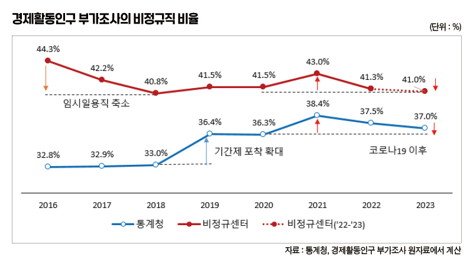

박영삼의 통계로 보는 노동
‘비정규직 통계’ 뜨거운 공방은 옛말, 노동계-정부 차이 거의 사라져
통계청 조사방법 개편 이후 비정규직 범위·규모 ‘유사’ … 새로운 통계 확충해야
비정규직 규모와 비율을 확인할 수 있는 경제활동인구 부가조사 원자료가 지난달 말 공개됐다. 공개 직후 노동계에서 비정규직 통계를 분석하는 한국비정규노동센터와 한국노동사회연구소가 각각 분석 보고서를 냈다.
통계청이 지난 10월에 발표한 비정규직 비율은 37.0%다. 지난해(37.5%)에 비해 0.5%포인트 감소한 수치다. 비정규노동센터와 노동사회연구원이 발표한 비정규직 비율은 각각 41.0%, 41.3%였다. 역시 지난해보다 0.3%포인트, 0.1%포인트 감소했다.
정부와 노동계의 비정규직 통계에서 가장 큰 차이는 ‘계약기간을 정하지 않은 임시일용직을 어떻게 볼 것이냐’는 문제다. 2007년 비정규직법 시행 이후 2018년까지 임시일용직 비중이 지속적으로 줄면서 노동계 추산 비정규직 비율도 감소추세를 보였다. 여기에 2019년 이후 통계청의 조사방법 변경으로 기간제와 한시적근로의 포착 범위가 크게 확대됐다. 이에 따라 정부와 노동계 간 비정규직 통계 차이도 큰 폭으로 축소됐다. 정부와 노동계 통계의 비정규직 비율 차이도 줄고 증감 방향도 같아졌기 때문에 향후 노동계 집계에서도 비정규직 비율이 약간 감소하는 것으로 결과가 나올 것이라는 예상이 맞아떨어졌다. <매일노동뉴스 2023년 10월27일자 ‘박영삼의 통계로 보는 노동 비정규직 사회보험 가입률, 고용보험 꼴찌에서 일등으로’ 기사 참조>

아래 <표>는 노동계와 정부의 비정규직 구분에서 공통적인 부분과 차이가 나는 부분을 비율로 표시한 것이다. 노동계는 비정규직으로 분류하지만 정부는 정규직으로 판단하는 그룹이 있는데 이 비율(A)은 4.2%로 줄었다. 반대로 정부에서 비정규직으로 파악하는데 노동계가 정규직으로 구분(B)하는 그룹이 0.2% 존재한다. 전자에서 후자를 차감하면 노동계와 정부의 비정규직 비율 차이(4.0%)가 된다. 이 차이는 2016년에는 무려 12.4%에 달했던 것인데 지금은 4.0%로 줄어든 것이다.
다른 한편 2016년 통계청 기준 비정규직 월평균 임금은 정규직의 53.6%지만, 노동계의 비정규직 상대임금은 48.9%에 불과한 수준으로 나타난다. 이렇게 차이가 컸던 비정규직의 상대임금은 2021년 통계청 53.0%, 노동계 52,3%로 크게 좁혀졌고 2023년 8월에는 54.1%대 53.6%로 0.5%포인트 내로 근접했다. 시간당 임금 기준도 둘 사이의 간극은 2016년 65.4%대 55.2%에서 2023년 69.5%대 66.8%로 2.7%포인트 차이로 근접했다. 사회보험 가입률에서도 이제는 1~2%포인트 정도의 차이만 나는 상황이다. 비정규직의 노조가입률도 정부 통계와 노동계의 통계는 0.2%포인트 차이 정도로 근접한 상태다.
결국 노동계 판단이 옳았다고 볼 수 있다. 한때 비정규직 규모와 범위를 둘러싸고 정부와 노동계는 격한 논쟁과 공방을 벌였다. 정부는 당시 비정규직을 최대한 좁고 엄격하게 정의하려고 했다. 하지만 2019년의 조사방법 개편은 결과적으로 노동계 손을 들어준 셈이다.
다른 한편으로 노동계의 비정규직 통계분석 의미와 중요성이 약화할 가능성도 없지 않다. 정부의 발표내용과 일정한 예측 범위 안에서 약간의 수치 차이만 있게 되면 독자적인 중요성은 그만큼 떨어질 수도 있기 때문이다. 때문에 그동안 비정규직 통계를 둘러싸고 벌어졌던 일정한 공방이 새로운 차원의 비정규직 통계 개선과 확충으로 이어질 필요가 있다.
통계청의 비정규직 관련 경제활동인구 부가조사는 올해로 23년째를 맞고 있다. 많은 한계가 있다는 지적이 있었지만 오랜 기간 비교적 동일한 기준을 유지하면서 역사와 전통을 갖는 대표적인 국가통계다. 노동계의 비정규직 통계 분석도 독자적인 영역을 개척하면서 학술연구와 사회운동 모두에 중요한 기여를 했다.
앞으로 산업과 직종 등 동종 부문 안에서 정규직-비정규직 간 임금·근로시간·사회보험 등 보다 상세한 내용들이 객관적이고 충실한 통계로 작성될 필요가 있다. 이렇게 확충되는 통계 원자료의 충실한 개방 역시 너무도 필요한 일이다.
고려대 노동문제연구소 노동데이터센터장 (youngsampk@gmail.com)